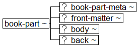

Book Interchange Tag Suite (BITS) Version 1.0 Tag Library Version 1.0
Digital Archive of Journal Articles
National Center for Biotechnology Information (NCBI)
National Library of Medicine (NLM)
Book Part Structures

Subsidiary sections:
Book Part Metadata structure diagram
Title Group structure diagram
Front Matter structure diagram
Body of a Book Part structure diagram
Section structure diagram
Section Metadata structure diagram
Back Matter for a Book Part structure diagram